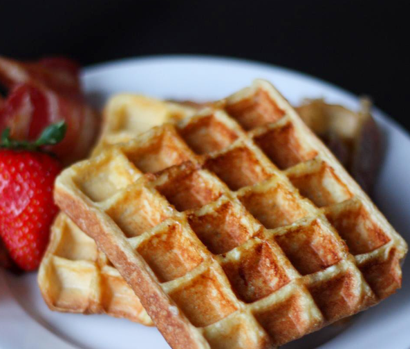

French Toast Waffles

Description
These French toast waffles are the best of both worlds! Slices of brioche are dipped in an eggy French toast batter and pressed into waffle shapes in a hot waffle iron.
Ingredients
- ½ cup whole milk
- 2 large eggs
- 1 tablespoon maple syrup
- ½ teaspoon vanilla extract
- 1 pinch salt
- 4 1/2-inch thick pieces brioche
- cooking spray
Steps
- Preheat a waffle iron according to the manufacturer's instructions.
- Whisk milk, eggs, maple syrup, vanilla extract, and salt together in a wide bowl until thoroughly combined. Dip one slice brioche into the bowl and press gently until both sides are coated. Lift bread from the bowl with a slotted spatula, letting any egg mixture drip back into the bowl, and transfer to a rimmed baking sheet. Repeat with remaining bread. Let sit until egg mixture soaks in, about 2 minutes.
- Spray the preheated waffle iron with cooking spray. Place one slice brioche onto the waffle iron and gently close the lid without forcing it down. Cook until golden brown and the iron stops steaming, 3 to 5 minutes. Repeat to cook remaining waffles.